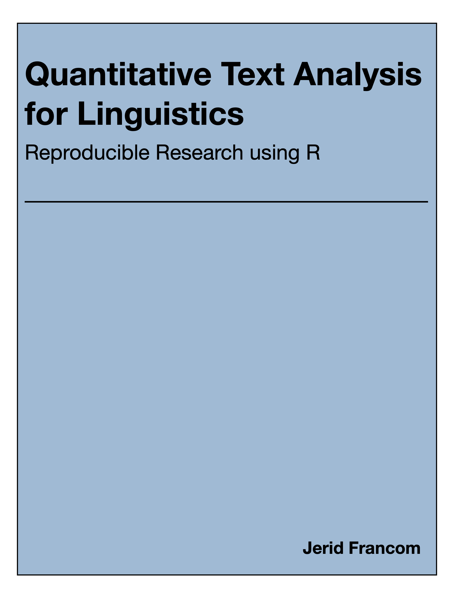

| package | version | source |
|---|---|---|
| dplyr | 1.0.10 | CRAN (R 4.2.0) |
| forcats | 0.5.2 | CRAN (R 4.2.0) |
| ggplot2 | 3.4.0 | CRAN (R 4.2.0) |
| here | 1.0.1 | CRAN (R 4.2.0) |
| knitr | 1.41 | CRAN (R 4.2.0) |
| purrr | 1.0.1 | CRAN (R 4.2.2) |
| readr | 2.1.3 | CRAN (R 4.2.0) |
| rmarkdown | 2.19 | CRAN (R 4.2.0) |
| stringr | 1.5.0 | CRAN (R 4.2.0) |
| tadr | 0.1.1 | local |
| tibble | 3.1.8 | CRAN (R 4.2.0) |
| tidyr | 1.2.1 | CRAN (R 4.2.0) |
| tidytext | 0.4.1 | CRAN (R 4.2.0) |
| tidyverse | 1.3.2 | CRAN (R 4.2.0) |
| webshot | 0.5.4 | CRAN (R 4.2.0) |
Quantitative Text Analysis for Linguistics
Reproducible Research using R
Welcome

This textbook is an introduction to the fundamental concepts and practical programming skills from Data Science that are increasingly employed in a variety of language-centered fields and sub-fields applied to the task of quantitative text analysis. It is geared towards advanced undergraduates, graduate students, and researchers looking to expand their methodological toolbox.
The content is currently under development. Feedback is welcome and can be provided through the hypothes.is service. A toolbar interface to this service is located on the right sidebar. To register for a free account and join the “text_as_data” annotation group follow this link. Suggestions and changes that are incorporated will be acknowledged.
Author
Dr. Jerid Francom is Associate Professor of Spanish and Linguistics at Wake Forest University. His research focuses on the use of large-scale language archives (corpora) from a variety of sources (news, social media, and other internet sources) to better understand the linguistic and cultural similarities and differences between language varieties for both scholarly and pedagogical projects. He has published on topics including the development, annotation, and evaluation of linguistic corpora and analyzed corpora through corpus, psycholinguistic, and computational methodologies. He also has experience working with and teaching statistical programming with R.
License

This work by Jerid C. Francom is licensed under a Creative Commons Attribution-NonCommercial-NoDerivatives 4.0 International License.
Credits
Icons made from Icon Fonts are licensed by CC-BY-3.0
Acknowledgements
TAD has been reviewed by and suggestions and changes incorporated based on the feedback through the TAD Hypothes.is group by the following people: Andrea Bowling, Caroline Brady, Declan Golsen, Asya Little, Claudia Valdez, …
Build information
This version of the textbook was built with R version 4.2.2 (2022-10-31) on macOS Big Sur … 10.16 with the following packages: